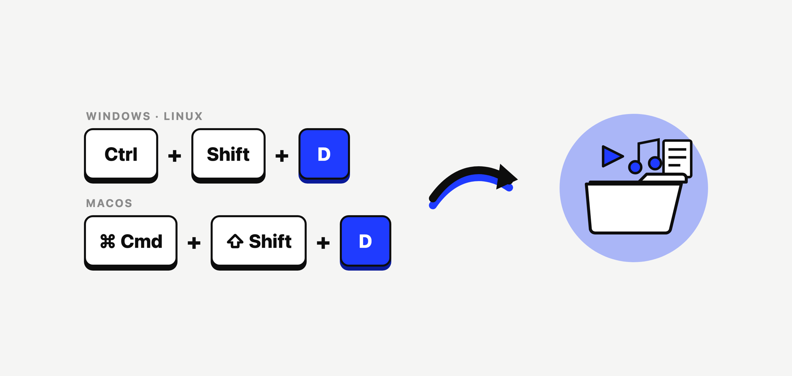

OmniGet Quickstart Guide
Download online courses, video, audio, image galleries, and torrents from 1,800+ sites. Study with an integrated offline player and drive media tasks locally via AI agents.

OmniGet is a free, open-source desktop application (GPL-3.0) and local media workbench for Windows, macOS, and Linux. It combines high-velocity media extraction from 1,800+ sites with native extractors for paid courses, social platforms, offline study tooling, and a local Model Context Protocol (MCP) server for autonomous AI agents.
Visual Media Studio
One-click download box, real-time speed & ETA telemetry, integrated offline video/audio player, and 158 built-in tools.
AI Developer Agent Bridge
Exposes 37 local tools over 127.0.0.1:47720 to Claude Code, Cursor, and VS Code for automated downloading and transcription.
Standalone Portable Mode
Create portable.txt next to the Windows executable to isolate all SQLite databases, cookies, and tools onto a USB stick.
1. Quickstart & First Download Walkthrough
Getting started requires zero manual configuration. OmniGet automates tool verification and network optimization on first boot:
-
Automatic Engine Verification: On initial launch, OmniGet asks for your preferred language and theme, then verifies or fetches
yt-dlpandFFmpegagainst strict cryptographic SHA-256 checksums before anything executes. If Python 3.10+ is detected on your system, yt-dlp runs as a zipapp, starting in under one second. - Paste Any Link: Copy any media URL to your clipboard—a YouTube video, Instagram reel, TikTok post, X thread, Pinterest board, Bilibili series, magnet link, or .torrent file. Paste it into the main input box. (For enrolled e-learning courses, navigate to the dedicated Courses workspace with your active login session).
- Inspect Streams & Choose Quality: OmniGet probes the destination server and renders available streams: choose from 4K HDR, 1080p60, AV1/VP9/H.264, or extract pure audio directly as MP3, M4A, Opus, or lossless FLAC.
- Adaptive Download Telemetry: Hit download. The Downloads panel displays real-time transfer speed, chunk phase, and true calculated ETA. Interrupted downloads resume from their exact byte offset, while rate-limited sites are automatically paced with exponential backoff.

2. Global Hotkeys & Background Capture
You don't need to keep the OmniGet window in the foreground. Once enabled in Settings → Downloads → Clipboard & hotkeys, system-wide keyboard shortcuts trigger instant background downloads:
| Shortcut (Windows / Linux) | Shortcut (macOS) | Action Description |
|---|---|---|
Ctrl + Shift + D |
Cmd + Shift + D |
Reads the active clipboard URL and queues the highest available video quality silently in the background. |
Ctrl + Shift + M |
Cmd + Shift + M |
Extracts audio-only (converts YouTube or social links directly to MP3) without opening the main window. |
Ctrl + K |
Cmd + K |
Opens the universal Command Palette to jump to any of the 158 tools, settings, or download queues instantly. |

3. Technical Comparison Matrix
How OmniGet compares against raw command-line tools, single-site web downloaders, and paid commercial course downloaders:
| Feature Axis | OmniGet | yt-dlp CLI Alone | Single-Site Web Tools | Paid Course Tools |
|---|---|---|---|---|
| Supported Sites | 1,800+ sites + 38 Courses, Instagram, X, Pinterest, Bilibili, Torrents | 1,800+ sites | 1 site only | 1 or 2 platforms |
| Setup Experience | One executable, auto-manages yt-dlp, FFmpeg & whisper.cpp | Manual Python, PATH, FFmpeg flags | None (browser) | Installer + license key |
| Authenticated Content | Companion Extension forwards session cookies in 1 click | Manual --cookies text export |
Rarely supported | In-app browser login |
| Queue & Resilience | Resume, retry with backoff, up to 16 parallel fragments | 1 command at a time | No queue | Varies |
| Post-Download Hub | Study workspace, player, reader, Anki cards, 158 tools | Raw files on disk | Files, often re-encoded | Raw folder |
| Pricing & License | 100% Free & Open Source (GPL-3.0) | Free (Unlicense) | Ad-supported / rate limited | $40 - $120 / year subscription |
4. Supported Media Engines & 1,800+ Sites
OmniGet pairs high-performance native extractors for heavily authenticated platforms with yt-dlp for universal web compatibility:
- Online Courses (37 Native Engines): Hotmart, Kiwify, Udemy, Rocketseat, Memberkit, Eduzz (Nutror), Estratégia, Gran Cursos, Data Science Academy, Fluency Academy, Skool, Gumroad, MasterClass, Pluralsight, Teachable, Thinkific, and more. Preserves full curriculum hierarchy and downloads attachments.
- Video & Audio Streaming: YouTube (videos, playlists, channels, SponsorBlock skip, Return YouTube Dislike, live streams from start, Force H.264 switch), TikTok, Instagram, X, Reddit, Twitch (VODs, clips, live), Vimeo, Bluesky, Threads, Douyin.
- Bilibili (Authenticated Hi-Fi): 4K, HDR, Dolby Vision, Dolby Atmos, and Hi-Res lossless audio via your VIP session. Exports danmaku comments as XML/ASS and generates Kodi/Jellyfin NFO metadata.
- Image Galleries (250+ Sites): Full artist profile and gallery downloads via gallery-dl integration (Pixiv, DeviantArt, ArtStation, Flickr, Tumblr, Kemono, Imgur).
- Torrents & P2P Transfer: Built-in BitTorrent client powered by librqbit handles
.torrentfiles and magnet links. Direct peer-to-peer computer transfer with short word codes. - Telegram Channel Archiver: The embedded OmniGram plugin downloads photos, videos, audio, and documents from any group you belong to into structured folders (
OmniGram/<channel>/).

5. Study & Offline Workspace
Downloading educational material is only essential. OmniGet includes an integrated Study module built to complete what you download:
Timestamped Notes
Resumes playback to the second. Press N while watching to capture an annotated note that jumps back to that timestamp when clicked.
E-Book & PDF Studio
Read PDF, EPUB, DJVU, MOBI, AZW3, FB2, and CBZ with paper-like themes, text highlights, bookmarks, and font controls.
Anki Flashcard Engine
Turn any video note or book highlight into a flashcard. Supports importing .apkg and CSV decks with full review logs.

6. The 158 Offline Tools Hub
OmniGet bundles 158 focused utilities grouped across 25 categories. Each tool is an isolated, deterministic Rust command with JSON input and output:

- Speech & Subtitles: Offline whisper.cpp transcription, Microsoft Edge neural TTS, subtitle translation, and bilingual subtitle merging.
- Video Editing: Lossless video trimming, two-pass target size compression (e.g. 10MB Discord limits), video-to-GIF, silence cutting, video stabilization.
- PDF & Documents: Merge, split, compress, repair corrupted PDFs, Bates-numbering, redaction verification, and PDF-to-Markdown conversion for LLMs.
- Images: Vulkan GPU upscaling (Real-ESRGAN), batch resizing, duplicate photo detection, screenshot stitching, and spritesheet slicing.
- System & Privacy: Cache cleaner, disk treemap analyzer, hosts file ad-blocking, Windows privacy hardening, and duplicate file hash finder.
- CTF & Cryptography: Hash & HMAC identification, file entropy analysis, Caesar/Vigenère/XOR cracking, and base64/hex multi-decoders.
Press Ctrl + K (or Cmd + K on macOS) anywhere in the application to open the Command Palette, search by keyword, and execute any tool immediately.
7. Privacy Policy & Zero-Telemetry Architecture
OmniGet is an offline-first desktop app. It runs locally on your workstation with no user accounts, no cloud backend, and no central servers collecting your activity.

Zero Telemetry & Analytics
The app has no analytics, crash reporters, or usage trackers. When you paste a link, search for streams, or run a download, nothing is reported back:
- No telemetry or heartbeat requests.
- No URL logging: links, video titles, and download paths stay on your machine.
- No analytics SDKs: built without Google Analytics, Sentry, Firebase, Mixpanel, Datadog, or PostHog.
- No ads, sponsored links, or hidden cryptominers.
Local Storage & User Data Ownership
All settings and download records are saved directly to your operating system's standard application directory:
- Windows:
%APPDATA%\omniget\(or adjacent to executable ifportable.txtexists) - macOS:
~/Library/Application Support/omniget/ - Linux:
~/.config/omniget/or$XDG_DATA_HOME/omniget/
Within these paths, OmniGet maintains:
history.db: SQLite database storing download history, file paths, media titles, custom tags, and notes.settings.json: Configuration preferences (download directories, concurrent stream limits, speed limits, theme).cache/: Temporary thumbnail previews and active download fragments.
Data Deletion: You can wipe download history at any time through the in-app "Clear Download History" command or by deleting the history.db file from disk.
Direct Downloads (No Proxy Relays)
When downloading or inspecting media, connections go directly between your computer and the media host's CDN (such as YouTube, Vimeo, Instagram, TikTok, or course servers). OpenSelena runs no proxy servers, relays, or stream reflectors. The destination servers receive your IP address and standard HTTP request headers, similar to opening the page in a browser.
Browser Extension & Session Cookies
The companion extension communicates with OmniGet Desktop strictly over local loopback (http://127.0.0.1:47720 to 47730). It never connects to the internet. Handshakes require a local session token from the running desktop app. Forwarded session cookies are encrypted locally on disk and used only by native extractors. They are never sent to external servers.
Local MCP Server Security
The built-in MCP server runs over stdio or binds strictly to 127.0.0.1. It rejects connections from outside your machine. Local AI tools (Claude Desktop, Cursor, local LLMs) interact with tools directly on your computer without sending prompts or transcripts to OpenSelena.
DRM Policy
OmniGet does not crack, decrypt, or bypass DRM protections like Widevine, FairPlay, or PlayReady. When an encrypted stream is detected, OmniGet stops extraction and skips the stream.
Outbound Network Request Matrix
The following table details every outbound network request that OmniGet can initiate:
| Destination | Purpose | Data Transmitted | Trigger Condition |
|---|---|---|---|
| Origin Media CDNs (YouTube, Vimeo, etc.) |
Retrieve media streams, format manifests, and fragments. | Target URL, HTTP Range headers, local session cookies (if authenticated). | Only upon user-initiated download or inspection action. |
GitHub APIapi.github.com/repos/OpenSelena/... |
Check for newer releases and security patches. | Standard HTTP User-Agent and client architecture (e.g. OmniGet/0.11.0 x86_64). |
On startup (can be disabled in Settings). |
| OpenStreetMap Nominatim (Optional diagnostic) |
Resolve server location in the Network Tools tab. | Selected target host/IP query string. | Only if user manually runs the GeoIP Lookup tool. |
| OpenSelena Servers | None. We operate zero telemetry, tracking, or proxy servers. | None. | Never. |
Open Source Verification
OmniGet is licensed under GPL-3.0. The full source code is public on GitHub. You can inspect all network and database code directly, or verify that the app sends no telemetry by monitoring network traffic with Wireshark, Fiddler, or mitmproxy.
8. omniget-cli Command Reference
Every release includes the headless omniget-cli binary for terminal workflows, automated scripts, and CI runners:
# 1. Download video or audio directly:
omniget-cli fetch "https://www.youtube.com/watch?v=..." --audio
# 2. Transcribe media using offline whisper.cpp:
omniget-cli transcribe ./lecture.mp4 --model base --language en
# 3. Execute any of the 158 offline tools via CLI:
omniget-cli tools pdf-merge ./ch1.pdf ./ch2.pdf -o ./combined.pdf
# 4. Check system dependencies and environment integrity:
omniget-cli doctor9. Whisper Model Management & Speech Studio
OmniGet's Speech & Subtitles engine bundles whisper.cpp for local GPU/CPU speech-to-text. Models are stored in %APPDATA%\OmniGet\models\ on Windows and ~/.config/OmniGet/models/ on macOS/Linux:
| Model Variant | Disk Size | RAM / VRAM Required | Recommended Usage |
|---|---|---|---|
tiny / tiny.en |
75 MB | ~390 MB | Fastest draft transcription on low-spec laptops and battery power. |
base / base.en (Default) |
142 MB | ~500 MB | Balanced accuracy and speed for YouTube videos, podcasts, and clear speech. |
small |
466 MB | ~1.0 GB | High accuracy across accented English and general multilingual speech. |
medium |
1.5 GB | ~2.6 GB | Professional transcription for technical lectures and noisy environments. |
large-v3 |
3.1 GB | ~4.7 GB | Maximum multilingual precision, music lyrics, and low-fidelity audio recordings. |
10. Official Release Notes & Changelog
Track every update, new engine integration, and bugfix shipped in OmniGet. OmniGet adheres to Semantic Versioning and publishes signed artifacts with SHA-256 validation for every desktop release.
36 Course Platforms Wired & Security Protocol Hardening
36 Course Platforms Wired & Platform Dispatcher
- Connected all 36 supported platforms directly to the
download_course_platformdispatcher. - Added native authentication and Udemy course listing handlers inside the embedded
CoursesPlugin. - Injected Tauri
AppHandleinto the embedded plugin for background downloads, queue sync, and notifications. - Resolved zero-course listing fallback and improved session handling for Udemy and Hotmart.
Security Hardening & Protocol Isolation
- Enforced strict non-null Content Security Policy (CSP) across all Tauri webview windows.
- Restricted custom asset protocol (
asset://) access strictly to app data, user download, and system temp directories. - Scoped
shell:allow-openpermissions to safe web and email protocols (https:,http:,mailto:). - Enforced strict
0600POSIX file permissions on cached authentication tokens and credentials on disk. - Sanitized cookie and authorization headers against CRLF and control character injection attacks.
UI Polish & Metadata Standardization
- Standardized Windows executable and installer metadata: product name is OmniGet and publisher is OpenSelena.
- Dynamic version resolution in the About dialog directly from the Tauri runtime.
- Cleaned footer credits and standardized tab titles and terminology across all 12 localized languages.
- Prevented heap out-of-memory errors during frontend bundling by allocating 4GB memory to the build process.
Telegram OmniGram Isolation & Static Plugins
Telegram & OmniGram Directory Isolation
- Media items downloaded via Telegram now automatically save into dedicated
OmniGram/{channel_name}/subfolders. - Added OS-safe directory name sanitization for Windows, macOS, and Linux to prevent illegal filesystem characters.
- Automatic folder reuse on subsequent downloads prevents redundant duplicate directory trees.
- Fixed
DC_ID_INVALIDerrors when downloading large media archives through home datacenters.
Statically Embedded Core Plugins
- The
convert,courses, andtelegramplugins are now statically compiled into the primary desktop binary, preventing runtime library load failures. - Eliminated dynamic library loading errors and duplicate symbol collisions across operating system architectures.
- Updated plugin registry and repository endpoints to official OpenSelena URLs.
- Fixed Kajabi login token signature handling and Windows WebView2 COM
PWSTRtype compatibility.
Linux Bridge & Full Localization
- Resolved WebKitGTK local media streaming and session token pre-authentication on Linux desktops.
- Configured system GStreamer plugin search paths inside AppImage builds to support hardware-accelerated video decoding.
- Completed full Russian (Русский) UI translation across all application dialogs and views.
Plugin Command Signatures & Telegram Sync
- Registered missing login command signatures across course provider authentication routines.
- Registered background performance monitoring and real-time sync event handlers in Telegram downloader plugin.
Telegram Datacenter Handshake Fix
- Fixed persistent download interruptions and handshake resets (
DC_ID_INVALID) when pulling large media files from Telegram home servers.
Archived Releases & Historical Commits
Review release notes for v0.10.2, v0.10.1, v0.10.0 and earlier milestones in the dedicated changelog.